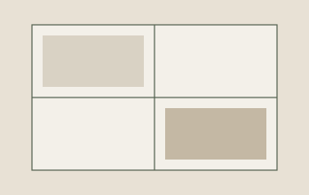
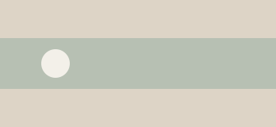
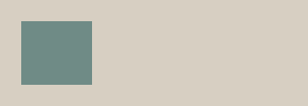
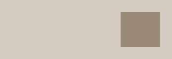

LAMPY · 生活册样本

示例册 · 窗边
1
LAMPY · 生活册样本

1
开篇
把这几个普通下午放在一起。下面都是合成句子。
开篇由用户自己写。Lampy 不代写标题，也不把后面的记录收成一篇故事。
2
2024年9月3日
楼下的风比昨天软。
把杯子洗了。
3 · 同日两条，日期只印一次
2024年9月12日
这是一条合成长文，只用来看跨页，不是谁的日记。下午坐在桌边，把一盏灯拧到刚够写字。窗外没有要拍下来的事，于是写下这一段。第一页应该在句子中间自然断开，第二页接着读，不要出现省略号，也不要改成「六行预览」。
4 · 长文上半，未截断
9月12日 · 续
写到这里仍然只是纸上的练习：两张几何图和一段未附原件的声音会跟在后面，顺序与记录里一致。

5 · 文字与第一张图相邻

6 · 第二图原比例 + 声音占位
2024年9月18日

窗台上的影子斜了一点。
7 · 单图，原比例
2024年9月22日
8 · 仅声音
2024年10月2日



9 · 三图按记录内顺序，跨月无自动章名
10月2日
三张纸色练习，不是那天拍的生活。
出门前把门带上了。
10 · 同日：图组之后的短句
时间未确认
那次把窗台上的土扫干净了。
11 · 不补造发生日
2024年10月14日
本想留下窗外的树。
12 · 缺失媒体可见
2024年10月20日
今天没有更多要写的。
13
空白
这一页下部故意留白。排版不为此编一句生活。
14 · 空白比例
夹具清单（审阅用，第一版成册不自动出目录）
15
这些日子，先放到这里。
16